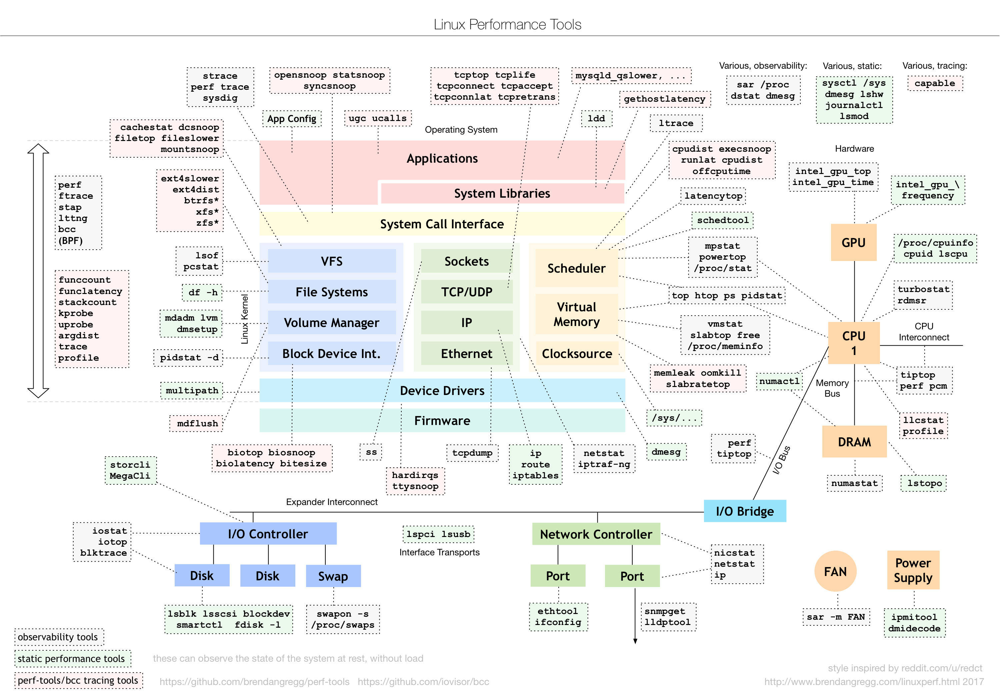

Linux Administration
Table of Contents
1 findutils
1.1 which
1.2 whereis
searches a broader range of system directories and is independent of your shell’s search path
1.3 locate
consults a precompiled index of the filesystem to locate file
2 Help
2.1 man
man -k regexp man -f command # list all sections
2.1.1 manpath
Use manpath to see locations of the man files
3 Booting
- Loading BIOS/UEFI from NVRAM
- Probe for hardware
- Select boot device(disk, network,…)
- Identify EFI system partition
- Load boot loader(e.g. GRUB)
- Determine which kernel to boot
- Load kernel
- Instantiate kernel data structures
- Start init/systemd as PID 1
- Execute startup scripts
- Running system
3.1 BIOS vs. UEFI
3.1.1 Legacy BIOS(Basic Input/Output System)
BIOS assumes that the boot device starts with a record called the MBR. MBR reads and executes the second-stage boot loader(volume boot record)
3.1.2 UFEI(Unified Extensible Firmware Interface)
The UEFI specification includes a modern disk partitioning scheme known as GPT(GUID Partition Table).
3.2 GRUB 2
3.2.1 config
- /etc/default/grub
- /etc/grub.d/40_custom
/boot/grub/grub.cfg
Use grub-mkconfig to generate grub.cfg, update-grub stub for grub-mkconfig on Ubuntu
3.3 init
3.3.1 modes
- Single-user mode
in which only a minimal set of filesystems is mounted, no services are running, and a root shell is started on the console.
- Multiuser mode
in which all customary filesystems are mounted and all configured network services have been started, along with a window system and graphical login manager for the console
- Server mode
similar to multiuser mode, but with no GUI running on the console
3.4 systemd
3.4.1 unit file
[Unit] Description=fast remote file copy program daemon ConditionPathExists=/etc/rsyncd.conf [Service] ExecStart=/usr/bin/rsync --daemon --no-detach [Install] WantedBy=multi-user.target
unit directory: /usr/lib/systemd/system or /lib/systemd/system. /run/systemd/system that’s a scratch area for transient units.
3.4.2 systemctl
- Subcommands
Subcommand Function list-unit-files [pattern] Shows installed units; optionally matching pattern enable unit Enables unit to activate at boot disable unit Prevents unit from to activate at boot isolate target Changes operating mode to target start unit stop unit restart unit status unit kill pattern Sends a signal to units matching pattern daemon-reload Reloads unit files and systemd configuration list-units - States
State Meaning bad Smoe kind of problem within systemd; usually a bad unit file disabled Present, but not configured to start autonomously enabled Installed and runnable; will start autonomously indirect Disabled, but has peers in Also clauses that may be enabled linked Unit file available through a symlink masked Banished from the systemd world from a logical perspective static Depended upon by another unit; has no install requirements - Targets
Target is a group of Units
Table 1: Mapping between init run levels and systemd targets Run level Target Description 0 poweroff.target System halt emergency emergency.target Bare-bones shell for system recovery 1, s, single rescue.target Single-user mode 2 multi-user.target Multiuser mode(command line) 3 multi-user.target Multiuser mode with networking 4 multi-user.target Not normally used by init 5 graphical.target Multiuser mode with networking and GUI 6 reboot.target System reboot To change current operating mode, use systemctl isolate, like telinit for init. systemctl get-default see the target the system boots into by default. set-default to set default.
3.4.3 Dependencies
| Option | Meaning |
|---|---|
| Wants | Units that should be coactivated if possible, but are not required |
| Requires | Strict dependencies; failure of any prerequisite terminates this service |
| Requisite | Like Requires, but must already be active |
| BindsTo | Similar to Requires, but even more tightly coupled |
| PartOf | Similar to Requires, but affects only starting and stopping |
| Conflicts | Negative dependencies; cannot be coactive with these units |
Use systemctl add-wants or add-requires to specify a dependency. Or add option WantedBy or RequiredBy to [Install] section.
3.4.4 Execution order
Use Before/After clauses from the unit files to sort the work list.
3.4.5 a more complex example
[Unit] Description=The nginx HTTP and reverse proxy server After=network.target remote-fs.target nss-lookup.target [Service] Type=forking PIDFile=/run/nginx.pid ExecStartPre=/usr/bin/rm -f /run/nginx.pid ExecStartPre=/usr/sbin/nginx -t ExecStart=/usr/sbin/nginx ExecReload=/bin/kill -s HUP $MAINPID KillMode=process KillSignal=SIGQUIT TimeoutStopSec=5 PrivateTmp=true [Install] WantedBy=multi-user.target
3.4.6 useful man to write unit file
- man systemd.service to see complete list of options for service
- man systemd.unit to see common options for all types
3.4.7 customizations
Add conf file to /etc/systemd/system/xxx.service.d directory.
- easy way:
systemctl edit xxx.service systemctl restart xxx.service
3.4.8 logging
System messages captured by journald are stored in the /run directory.
rsyslog can process these messages and store then in traditional log files or forward them to a remote syslog server.
journalctl displays log entries. -u to specify which service to display.
3.4.9 Utilities
- systemctl
- systemd-analyze
- hostnamectl
- localectl
- timedatectl
- loginctl
- networkctl
3.5 shutdown
3.5.1 halt
Performs the essential duties required for shutting down the system
3.5.2 reboot
Essentially identical to halt, but it causes the machine to reboot instead of halting
3.5.3 shutdown
The shutdown command is a layer over halt and reboot that provides for scheduled shutdowns and ominous warnings to logged-in users
4 Access Control
4.1 /etc/passwd
4.1.1 Login name
4.1.2 Encrypted password placeholder
- actual password in /etc/shadow
- change password restriction by editing /etc/login.defs
4.1.3 UID (user ID) number
4.1.4 Default GID (group ID) number
4.1.5 GECOS information
Use finger command to interpert GECOS, use chfn to change GECOS
- full name
- office number and building
- office telephone extension
- home phone number
4.1.6 Home directory
4.1.7 Login shell
Use chsh to change login shell listed in /etc/shells.
4.2 /etc/shadow
- Login name required
- Encrypted password required
- Date of last password change
- Minimum number of days between changes
- Maximum number of days between password changes
- Number of days in advance to warn users about password expiration
- Linux: Days after password expiration that account is disabled
- Account expiration date
- A reserved field that is currently always empty
4.3 /etc/group
- Group name
- Encrypted password or a placeholder
- GID number
- List of members, separated by commas
It is possible to enter a group password to allow users not belonging to a group to enter it with the newgrp command.
A password can be set with the gpasswd command
A user’s personal group should contain only that user. If you want to let users share files by way of the group mechanism, create separate groups for that purpose
4.4 /etc/sudoers
mark, ed SOME_HOST_ALIAS=ALL herb SOME_HOST_ALIAS=/usr/sbin/tcpdump : !SOME_HOST_ALIAS=(operator) DUMP lynda ALL=(ALL)ALL, !SOME_CMND_ALIAS %wheel ALL, !SOME_HOST_ALIAS = NOPASSWD: SOME_CMND_ALIAS
Whitelist the environment variables by adding them to the sudoers file’s env_keep list
4.5 users basic
4.5.1 Required
- Sign policy agreement
- Edit the passwd and shadow files to define user
Use vipw to edit passwd and shadow
- Add the user to the /etc/group file(optional)
If the new user should be a member of more groups than just the default group specified in the passwd file, you must edit the /etc/group file and add the user’s login name to each of the additional groups.
- Set an initial password
Use passwd
- Create, chown, and chmod the user’s home directory.
sudo chown -R newuser:newgroup ~newuser
- Configure roles and permissions(RBAC)
4.5.2 For the user
4.5.3 For administrator
4.5.4 Verification
$ pwd /* verify home directory */ $ ls -al /* check owner/group of startup files */
4.6 useradd command
4.6.1 examples
sudo useradd -c "chrischen" -d /home/chrischen -m -s /bin/zsh chrischen
sudo usermod -aG sudo chrishcen
4.6.2 ubuntu
Ubuntu provides two ways to add users: adduser and useradd. adduser is a Perl wrapper for useradd that is a bit more helpful (makes home directories, copies in startup files, etc.).
- adduser is configured in /etc/adduser.conf
- adduser has a twin addgroup and cousins deluser and delgroup.
4.7 Disabling logins
- usermod -L to lock user
- usermod -U to unlock user
4.8 Centralizing account management
4.8.1 LDAP
4.8.2 Identity management systems
4.9 Authentication
4.9.1 PAM(Pluggable Authentication Modules)
PAM is a wrapper for a variety of method-specific authentication libraries.
4.9.2 Kerberos: network cryptographic authentication
PAM is an authentication framework, Kerberos is a specific authentication method, PAM and Kerberos generally work together
4.9.3 Filesystem ACL
4.9.4 Linux capabilities
4.9.5 Linux namespaces
5 Process Control
5.1 kernel related data in memory
- The process’s address space map
- The current status of the process (sleeping, stopped, runnable, etc.)
- The execution priority of the process
- Information about the resources the process has used (CPU, memory, etc.)
- Information about the files and network ports the process has opened
- The process’s signal mask (a record of which signals are blocked)
- The owner of the process
5.2 Signals
| No | Name | Description | Default | Can catch? | Can block? | Dump core? |
|---|---|---|---|---|---|---|
| 1 | HUP | Hangup | Terminate | Y | Y | N |
| 2 | INT | Interrupt | Terminate | Y | Y | N |
| 3 | QUIT | Quit | Terminate | Y | Y | Y |
| 9 | KILL | Kill | Terminate | N | N | N |
| 10 | BUS | Bus error | Terminate | Y | Y | Y |
| 11 | SEGV | Segmentation fault | Terminate | Y | Y | Y |
| 15 | TERM | Software termination | Terminate | Y | Y | N |
| 17 | STOP | Stop | Stop | N | N | N |
| 18 | TSTP | Keyboard stop | Stop | Y | Y | N |
| 19 | CONT | Continue after stop | Ignore | Y | N | N |
| 28 | WINCH | Window changed | Ignore | Y | Y | N |
| 30 | USR1 | User-defined #1 | Terminate | Y | Y | N |
| 31 | USR2 | User-defined #2 | Terminate | Y | Y | N |
kill -l to list signals.
5.3 kill
- killall: kill by process name
- pkill: search for process to kill
5.4 ps
Useful options
- aux: a show all processes; x show processes that don't have a control terminal; u user oriented output format
- lax: faster than aux(UID only), aslo includes PPID, NI(niceness) and wait channel
- ww: enable unlimited column width
5.4.1 with grep
ps -aux | grep -v grep | grep xxxx
5.4.2 alternative command
- pidof
- determine the PID of a process
- (no term)
- pgrep
5.5 pstree
5.6 pidstat
pidstat -d -p PID 1 3
5.7 top
1: show loads of individual cores
- H: show threads
5.7.1 alternative htop
5.8 nice
- Niceness range:
-20to19 - Only root can run a command with high priority
- renice
5.9 execsnoop
5.10 /proc
ps and top read their process status information from the /proc directory
5.10.1 useful process files
cgroups, cmd, cmdline, cwd, environ, exe, fdinfo, ns, root, stat, statm
- fd
- reperents open files
- maps
- libraries dependencies
5.11 *strace*(lower level)
Display every system call that a process makes and every signal it receives
-fto trace sub processes
5.12 load average
- uptime: load average of 1-, 5-, 15-minute intervals(cpu&io)
5.13 identify processes using files or sockets
- fuser
- lsof: list open files
5.14 periodic processes
- crontab
- systemd timer
5.15 process state
- R: Running/Runnable
- D: Disk Sleep (Uninterruptible Sleep)
- Z: Zombie
- S: Interruptible Sleep
- I: Idle
6 Filesystem
6.1 mount
mkfs.typemount -t type /dev/sda [mountpoint]umount [mountpoint]
6.2 mounting
/etc/fstab- lists filesystems that are normally mounted on the system.
- fuser -c mountpoint
- prints the PID of every process that’s using a file or directory on that filesystem. uses -v to display command name
- lsof
- alternative to fusr, -F for easy parsing
6.3 File type
investigating file type:
fileorlsSymbol Type Created by - regular file editors d directory mkdirc character device file mknodb block device file mknods domain socket p named pipe mknodl symbolic link ln -s
6.4 Important Directories
man hier
/bin |
Contains binaries (programs) that must be present for the system to boot and run. |
/boot |
Contains the Linux kernel, initial RAM disk image, and the boot loader. |
/dev |
This is a special directory that contains device nodes. |
/etc |
Contains all of the system-wide configuration files. |
/home |
|
/lib |
Contains shared library files used by the core system programs. |
/lost+found |
It is used in the case of a partial recovery from a filesystem corruption event. |
/media |
Contain the mount points for removable media such as USB drives, CD-ROMs, etc. |
/opt |
The /opt directory is used to install "optional" software. This is mainly used to hold commercial software products that may be installed on your system. |
/proc |
It is a virtual filesystem maintained by the Linux kernel. The files are readable and will give you a picture of how the kernel sees your computer. |
/root |
This is the home directory for the root account. |
/sbin |
This directory contains 'system' binaries. These are programs that perform vital system tasks that are generally reserved for the superuser. |
/tmp |
The /tmp directory is intended for storage of temporary, transient files created by various programs. |
/usr |
The /usr directory tree is likely the largest one on a Linux system. It contains all the programs and support files used by regular users. |
/usr/bin |
Contains the executable programs installed by your Linux distribution |
/usr/lib |
The shared libraries for the programs in /usr/bin. |
/usr/local |
The /usr/local tree is where programs that are not included with your distribution but are intended for system-wide use are installed. |
/usr/sbin |
Contains more system administration programs. |
/usr/share |
Contains all the shared data used by programs in /usr/bin. |
/usr/share/doc |
Most packages installed on the system will include some kind of documentation. |
/var |
The /var directory tree is where data that is likely to change is stored. Various databases, spool files, user mail, etc. are located here. |
/var/log |
Contains log files, records of various system activity. These are very important and should be monitored from time to time. The most useful one is /var/log/messages. |
6.5 interesting files
/boot/grub/grub.cfg, which are used to configure the boot loader/boot/vmlinuz, the Linux kernel/etc/crontab, a file that defines when automated jobs will run/etc/fstab, a table of storage devices and their associated mount points1
7 Logging
7.1 Tasks
- Collecting logs from a variety of sources
- Providing a structured interface for querying, analyzing, filtering, and monitoring messages
- Managing the retention and expiration of messages so that information is kept as long as it is potentially useful or legally required, but not indefinitely
7.2 Syslog
- Rudimentary
- Message collection only
- Sorts messages and saves them to files or forwards them to another host over the network.
7.3 Systemd Journal
The journal collects messages, stores them in an indexed and compressed binary format, and furnishes a command-line interface for viewing and filtering logs.
journalctl: view logssystemd-journald: a logging daemon, collects messages from:/dev/logsocket- to harvest messages from software that submits messages according to syslog conventions
/dev/kmsg- to collect messages from the Linux kernel
/run/systemd/journal/stdout- to service software that writes log messages to standard output
/run/systemd/journal/socket- to service software that submits messages through the systemd journal API
- (no term)
- Audit messages from the kernel’s auditd daemon
systemd-journal-remoteutilities, to stream serialized journal messages over the network to a remote journal.sudo apt install systemd-journal-remote
7.4 Centralized Log Cluster
7.5 Locations
- It's often helpful to define
/var/logas a separate disk partition or filesystem lastcommand to decodewtmplastlogcommand to showlastlog
8 LDAP
| Attribute | Stands for | Description |
|---|---|---|
| o | Organization | Often identifies a site's top-level entry |
| ou | Organization unit | A logical subdivision |
| cn | Common name | The most natural name to represent the entry |
| dc | Domain component | Used at sites that model their hierarchy on DNS |
| objectClass | Object class | Schema to which this entry's attributes conform |
8.1 openldap
- command: slapd
- cluster: slurpd (master server)
configuration:
/etc/openldap/slapd.confdatabase bdb # default: Berkely DB suffix "dc=mydomain,dc=com" # LDAP basename, like DNS domain name rootdn "cn=admin,dc=mydomain,dc=com" # administrator name rootpw {crypt}abcDEFg/uiR # hashed password directory /var/lib/ldap
configuration:
/etc/openldap/lapd.conf, set the base to the same value as the suffixBASE dc=mydomain,dc=com URI ldap://xxx.mydomain.com- use slappasswd to change password
8.2 389 Directory Server
Advantages:
- Multimaster replication
- Active Directory user and group synchronization
- A graphical console for all facets of user, group, and server management
8.3 phpLDAPadmin
8.4 ldapsearch
command-line tool
9 Networking
9.1 Troubleshooting
10 Text Processing
cut: separate lines into fieldssort: sort linesuniq: print unique lineswc: count lines, words, and characterstee: copy input to two places
10.1 grep
| -i, –ignore-case | |
| -v, –invert-match | Invert the sense of matching, to select non-matching lines. |
11 Useful Command
11.1 os
uname -alsb_release -a
11.2 File System
11.2.1 ls
| -a, –all | do not ignore entries starting with . |
| -d, –directory | list directories themselves, not their contents |
| -F, –classify | append indicator to entries |
| -h, –human-readable | print human readable sizes |
| -r, –reverse | reverse order while sorting |
| -S | sort by file size, largest first |
| -t | sort by modification time, newest first |
11.2.2 file
determine file type
11.2.3 less, head, tail
11.2.4 mkdir
11.2.5 cp
| -a, –archive | Copy the files and directories and all of their attributes, including ownerships and permissions. |
| -i, –interactive | Before overwriting an existing file, prompt the user for confirmation. |
| -r, –recursive | Recursively copy directories and their contents. |
| -u, –update | When copying files from one directory to another, copy only files that either don’t exist or are newer than the existing corresponding files in the destination directory. |
| -v, –verbose | Display informative messages as the copy is performed. |
11.2.6 mv
similar to cp, common options: -i, -u, -v
11.2.7 rm
similar to cp, common options: -i, -r, -v
| -f, –force | Ignore nonexistent files and do not prompt. This overrides the –interactive option. |
11.2.8 ln
- create soft link:
ln file link - create hard link:
ln -s item link
11.2.9 GLOB pattern
| Wildcard | Matches |
|---|---|
* |
Any characters |
? |
Any single character |
[characters] |
Any character that is a member of the set characters |
[!characters] |
Any character that is not a member of the set characters |
[CLASS] |
Any character that is a member of the specified class |
11.3 Command Related
which: Display which executable program will be executed.man: Display a command’s manual page.apropos: Display a list of appropriate commands. same asman -kinfo: Display a command’s info entry.whatis: Display a very brief description of a command.
11.3.1 type
Indicate how a command name is interpreted. All types:
- An executable program
- A command built into the shell itself(e.g. cd)
- A shell function
- An alias(e.g. ls)
11.3.2 alias
Create an alias for a command.
alias foo='cd /usr; ls; cd -' alias # list all aliases
11.4 Redirection
11.4.1 Redirecting stdout and stderr to one file
some-command > output.txt 2>&1 # old version, the order of the redirections is significant. some-command &> output.txt
11.5 Expansion
11.5.1 Arithmetic Expansion
echo $((2 + 2))
11.5.2 Brace Expansion
echo Number_{1..5} # => Number_1 Number_2 Number_3 Number_4 Number_5 echo {Z..A} # => Z Y X W V U T S R Q P O N M L K J I H G F E D C B A echo a{A{1,2},B{3,4}}b # => aA1b aA2b aB3b aB4b mkdir {2009..2011}-0{1..9} {2009..2011}-{10..12}
11.5.3 Command Substitution
echo $(ls) ls -l $(which cp) # same as ls -l `which cp` # old syntax
11.5.4 Quoting
echo text ~/*.txt {a,b} $(echo foo) $((2+2)) $USER # => text /home/me/ls-output.txt a b foo 4 me echo "text ˜/*.txt {a,b} $(echo foo) $((2+2)) $USER" # => text ˜/*.txt {a,b} foo 4 me echo 'text ˜/*.txt {a,b} $(echo foo) $((2+2)) $USER' # suppress all expansions # => text ˜/*.txt {a,b} $(echo foo) $((2+2)) $USER
11.5.5 Escaping Characters
| \a | Beep |
| \b | Backspace |
| \n | Newline |
| \r | Carriage return |
| \t | Tab |
sleep 10; echo -e "Time's up\a" # or sleep 10; echo "Time's up" $'\a'
12 Writing Script
12.1 set
set -eux set -o pipefail
12.2 variables
etcdir='/etc' echo $etcdir echo ${etcdir} echo "$etcdir" echo "${etcdir}"
12.3 arguments
$0: command$1,$2: arguments$#: argument count$*: all arguments$?: return value of last command
12.4 comparison
- eq, ne, lt, le, gt, ge, -n, -z
- file: -d, -e, -f, -r, -s, -w, -nt(newer than), -ot(older than)
12.5 command currying
function ssh { /usr/bin/ssh -p 7988 $* } # same as alias ssh="/usr/bin/ssh -p 7988"
12.6 loop
for var in $*; do echo $var done for ((i=0; i < $CPU_COUNT; i++)); do echo $i done while read line; do echo $line done
12.7 show usage
#!/bin/bash function show_usage { echo "Usage: $0 source_dir dest_dir" exit 1 } # Main starts here if [ $# -ne 2 ]; then show_usage else # There are two arguments if [ -d $1]; then source_dir=$1 else echo "Invalid source directory" show_usage fi if [ -d $2]; then dest_dir=$2 else echo "Invalid dest directory" show_usage fi fi
12.8 quotes
mylang="Chinese" echo "I speak ${mylang}" #-> I speak Chinese echo 'I speak ${mylang}' #=> I speak ${mylang} echo "There are `wc -l /etc/passwd` lines in the passwd file"
12.9 an example
find . -name '*log ' find . -type f -name '*.log ' find . -type f -name '*.log ' | grep -v .do-not-touch find . -type f -name '*.log ' | grep -v .do-not-touch | while read fname do echo mv $fname ${fname/.log/.LOG/} done # finally find . -type f -name '*.log ' | grep -v .do-not-touch | while read fname; do echo mv $fname ${fname/.log/.LOG/}; done | bash -x
bash -x prints each command before executing it. Use fc to transfer last command to editor.
12.10 args
- $0: name of the script
- $1: first argument
- $#: the number of arguments
- $*: contains all the arguments at once
- echo $?: the exit status of the last command executed
12.11 Control flow
12.11.1 if clause
if [condition] then dosomething elif [condition] then dosomething else dosomething fi
12.11.2 case clause
case $message_level in 0) message_level_text="Error" ;; 1) message_level_text="Warning" ;; 2) message_level_text="Info" ;; 3) message_level_text="Debug" ;; *) message_level_text="Other" esac
12.11.3 comparison operators
| String | Numeric |
|---|---|
| x = y | x -eq y |
| x != y | x -ne y |
| x < y | x -lt y |
| x <= y | x -le y |
| x > y | x -gt y |
| x >= y | x -ge y |
| -n x | - |
| -z x | - |
12.11.4 bash file operators
| Operator | True if |
|---|---|
| -d file | file exists and is a directory |
| -e file | file exists |
| -f file | file exists and is a regular file |
| -r file | You have read permissions on file |
| -s file | file exists and is not empty |
| -w file | You have write permissions on file |
| file1 -nt file2 | file1 is newer than file2 |
| file1 -ot file2 | file1 is order than file2 |
12.11.5 Loops
for var in stuff; do ... done while cond; do ... done for ((i=0; i < count; i++)); do ... done
12.11.6 $(())
The $((…)) notation forces numeric evaluation,
$((counter++)) $(($a+$b))
12.11.7 Array
Use ${array_name[subscript]} to access individual elements. The subscripts * and @ refer to the array as a whole, and the special forms ${#array_name[*]} and ${#array_name[@]} yield the number of elements in the array.
13 Profiler
13.1 Performance Tools

13.2 Hardware Info
- /proc/cpuinfo
- /proc/meminfo
- /proc/diskstats
dmidecode -t
13.3 CPU
apt install sysstatvmstat 5 5: 5 updates; delay between updates is 5 secsmpstat -P ALLuptimeps -auxpidstat- dstat
- perf top, perf record, perf report
13.4 Memory
- /proc/sys/vm/swappiness
swapon -s
13.5 Disk IO
iostat 5 5xddsar -[ndA]
13.6 Web Profiler
13.6.1 ApacheBench
ab -c 10 -n 100 http://192.168.0.10:10000/
13.7 Stress Test
- stress